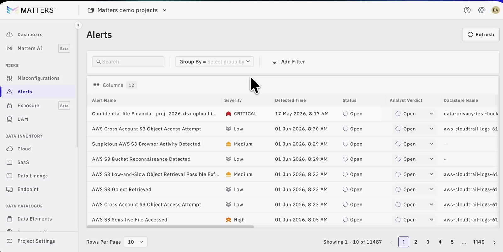
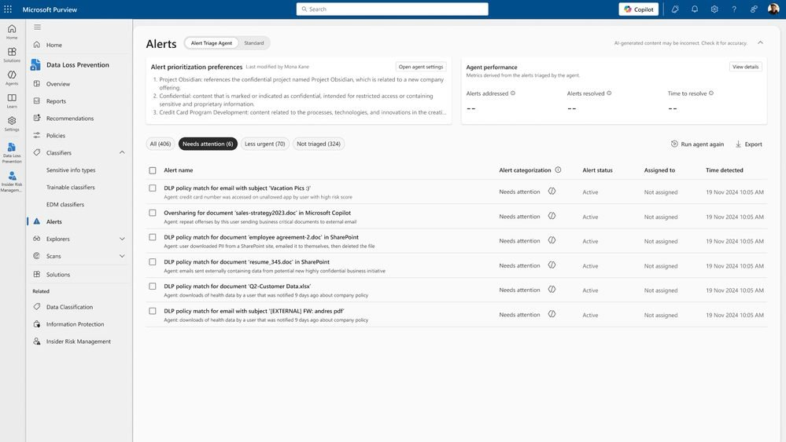
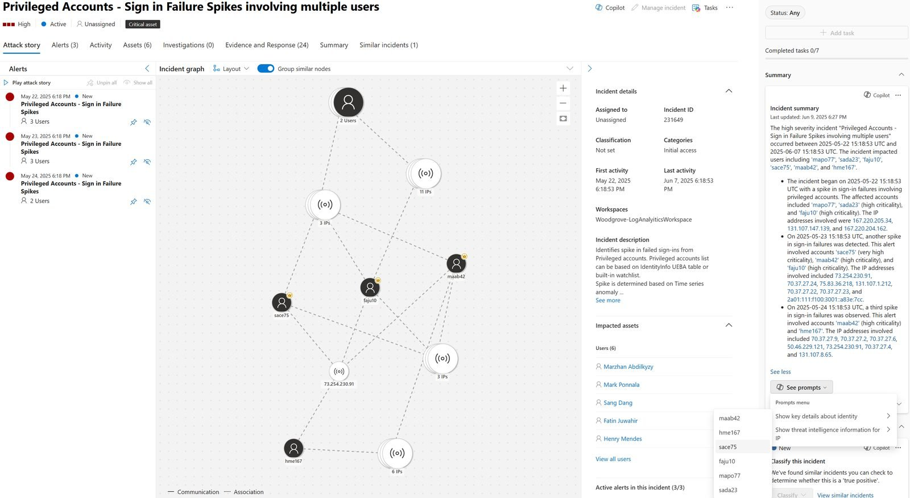
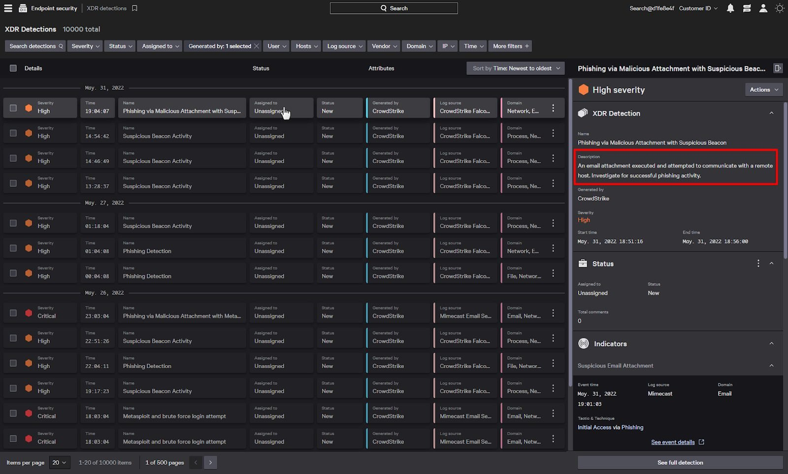

A data engineer working on building agents at CrowdStrike
A former cybersecurity data engineer
What they contributed
Scale runs from small to largeCustomers range from 10 to 50 computers to 500, 10,000 and 100,000 systems. At the very large end, customers go to the API rather than the screens. So the same queue has to work at both ends; see Designing for scale.
Too many tools, scatteredSecurity teams already run many products and the information is always scattered. The pull is toward consolidation: 1 place to look, as with Falcon for IT answering "is this patch safe". A data security product has to fit into that ecosystem, not add another silo.
Too many optionsCrowdStrike Falcon was named as offering too many options. Analysts have no time and want minimal friction.
Show the evidenceAnalysts want to see the evidence behind an alert, down to the exact commands that ran.
Export and make it their ownExport to CSV is the most used button. Customers want to build their own data formats, tables and views. Charlotte AI, CrowdStrike's assistant, is a chatbot that can also take actions.
Where to hear from usersReddit and peer review platforms, as a way to get user feedback without direct access to tier one analysts.
Policy leads to readIndia: SEBI, the securities regulator, which requires reporting a cyber incident within 6 hours. Europe: GDPR. US: HIPAA for health data. Card industry: PCI DSS.
The gap: In a short period of time, I had access to these two users. However neither is a tier one analyst their contributions were more to my understanding of cybersecurity as a domain rather than the alerts feature.
"We know 99% of the alarms we generate are false positives, but we still have to look at them."
What the study found, and what it means for the screens
Most "false positives" are benign triggers. The alarm is correct, but the activity is legitimate for that organization. Design: the verdict has False positive and Expected activity as separate values, and Teach Harbor asks why. No product I studied separates them on screen.
No reason, no trust. Analysts stop respecting alarms whose reason is hidden or given in one sentence. Design: every alert shows Harbor's call and its reasoning in full.
They confirm by seeing the matched data. Analysts want the exact content that triggered the alarm. Design: the matched evidence sits on the alert itself, not behind a search.
One source is not enough. Corroboration across sources is what gives confidence. Design: the user's history and the incident the alert belongs to sit in the alert details.
Context decides the verdict. Asset details, normal working hours, undocumented changes and fresh threat intel all shaped triage. Design: the asset, the user and the data lineage appear without leaving the alert.
Humans stay in the loop. SOCs avoid automated actions that could disrupt the business, and only 2 of the 20 surveyed used AI or ML tools, citing distrust. Design: the AI suggests, the analyst decides, and disruptive actions are never automatic.
Counting closed tickets hurts the work. Analysts are often judged on tickets closed. Design: no speed leaderboard. Every action is written to the alert's Audit trail.
Alahmadi, Axon and Martinovic, "99% False Positives". Roles ran from tier one analysts to a CISO. The authors note the sample is small and mostly UK-based, so these are signals, not proof.
Competitor analysis13 competitor tools studied for IA, flow, and features
I used Claude to create a report that covers each product's features, scale, pain points and screens. 13 products are studied in full, to understand information shown to users, chart types, workflows, pain points, and advantages of each design approach, the tools studied cover the U.S., and one called Dark Trace is a European reference.
6studied in full
7special mentions
15annotated screens
From my annotationsCompetitor research
Patterns observed that can be taken forward into Harbor Alerts
Judge both the content and the person, as Matters.AI does. In the prototype
Write the AI's reasons as bullet points (Matters.AI's Why High Risk?), not a score. In the prototype
Show what the AI checked and could not confirm. No product does this yet. Not in the prototype
Make overrides optional. Matters.AI users stopped checking the classifier after a month because it stayed accurate. Ask for a comment only on crown-jewel alerts. In the prototype
Keep disagreeing one click from the verdict, as with Purview's Change chip. In the prototype
Put alert classification settings in context on the alert, where the user is reading. In the prototype
Let users create a classification label from the alert mid-workflow and send it to configuration. Not in the prototype
Let a verdict be recorded from the details page, not only from the list. In the prototype
Correct the AI through a quick chatbot-style recategorization with Harbor AI. In the prototype
Combine severity with asset priority (Splunk), so a medium alert on a crown-jewel system can outrank a high one. In the prototype
Use shapes and keep red rare (Matters.AI), for color-blind users and so red keeps its meaning. In the prototype
Show a one-line reason and a severity column together. In the prototype
Lead with natural-language labels, not IDs. In the prototype
Show data movement as rows (Matters.AI's Data Lineage), which tier 1 analysts read more easily than graphs. In the prototype
Keep an untriaged bucket (Purview), with quick assign or dismiss, in case analysts have case limits. In the prototype
Split status from classification, using Defender's vocabulary. In the prototype
Separate a wrong rule from broken data (Splunk), since they need different fixes. Not in the prototype
Move expired alerts out of the main list but keep them findable, with a date picker. In the prototype
Offer an alert-by-alert view for tier 3 analysts who fine-tune patterns. Not in the prototype
Show filters or a query builder up front for users new to free-form search (Varonis). In the prototype
Give recommended next steps with the action one click away (Matters.AI). In the prototype
Offer more export options. A user I spoke to asked for this too. In the prototype
Patterns not to take forward
Mandatory comments on every override. Bulk actions and daily repetition make them taxing.
Agent settings up front on the list (Purview).
A text-heavy correction form (Purview's Teach agent).
Two separate lists for the same alerts (Purview). Prefer one list with custom columns and user-made buckets.
Repeated columns that hide anomalies, and low-contrast colors (Falcon).
Graph views (Defender, Falcon). They are hard to read, so I am leaving them out of this assignment.
Dark interfaces where everything looks like a highlight (SentinelOne).
IDs and metadata up front (SentinelOne).
Statuses that are really actions (Nightfall's 25). Actions belong in a growing action list.
Open questions and notes
Related alerts are grouped into one bucket (Defender), but related on what basis?
How do we follow up with the employee behind a policy violation, after the alert is closed?
I assume the initial tuning reviewers mention is the AI learning each company's patterns.
Alert delay is an infrastructure problem, not a design one.
Insights from the competitor analysis
Side panel, deliberate step out. Falcon opens a detection in a side panel over the list so the analyst keeps their place; See full detection is a deliberate step out. In Harbor, an alert opens in a panel beside the list and Open alert is the one step to the full page.
Defensible closure. Who closed an alert, on what evidence, and why. Microsoft Defender makes a resolution note mandatory. In Harbor, every action is written to the Audit trail with a name and a time.
Undo, including for automated actions. Nightfall is the only product with an explicit undo. In Harbor, Restore link undoes what Harbor did, and Reopen case brings back an auto-closed alert.
Nothing unowned. SentinelOne counts unassigned alerts; Splunk flags untriaged findings. In Harbor, every row shows its assignee, and an Awaiting analyst count sits above the list.
Trust in the AI at portfolio level. Purview shows alerts addressed, resolved and time to resolve. In Harbor, the counts above the list show what Harbor remediated and auto-resolved.
Grade the detection, not just the content. Cyera states whether the rule was right to fire, separately from what the document is. In Harbor, the verdict separates False positive from Expected activity.
Show where the AI stopped. Purview's Not triaged bucket tells the analyst what the AI has not handled yet. In Harbor, the Harbor action chip says Remediated or Action required on every row.
Correction becomes a rule. Purview's Teach agent and Nightfall's apply to all identical findings turn one disagreement into lasting tuning. In Harbor, Teach Harbor asks why, and the reason is logged. How Harbor learns from it is not built.
The gap nobody fills. No product shows what the AI checked and could not confirm, which an analyst needs before trusting a verdict. That is the opening Harbor's brief points at. The prototype does not show it yet.
Splunk separates status from disposition. Nightfall collapses them: its status says what was done to the data.
Purview lets the analyst teach the agent directly; Splunk makes suppression an analyst action.
Darktrace cuts the queue with a severity threshold instead of filters and closes with a comment plus acknowledgement, with no disposition field.
Feature matrix6 products on 8 criteria
Matters.AIPurviewDefenderVaronisNetskopeNightfall
Status and disposition are separate fields✓✓✓✓✕✕
Can be closed from the list, in the row or in bulk✓✕✓✕✓✓
AI explains its reasoning on the alert itself✓✓✓✓✕✕
Disagreeing with the system changes future behavior?✓?✕✓✓
Queue can be worked without a query language✓✓✓✓✓?
Shows how many alerts are waiting, as counts on the list✓✓??✓✓
Untriaged work has its own visible state?✓????
Closing requires a reason, not just a status?✓✓✓✕✓
Observed, out of 8575444
✓Observed✕Observed absent?Not established from public material
Every CTA, information category and chart type across the products is listed by tool in the Feature Definition.
From the competitor research reportReference examples
Alert lists

Matters.AI. Analyst Verdict has its own column next to Status, and severity pairs a shape with a word. Frame from a Matters.AI customer story video.

Microsoft Purview, Alert Triage Agent view. The agent sorts alerts into Needs attention, Less urgent and Not triaged (324), and shows alerts addressed, resolved and time to resolve.Alert detail pages

Microsoft Defender incident page. Related alerts are grouped into one incident, with a graph of users and IPs, incident details, and a Copilot summary with a Classify this incident prompt.

CrowdStrike Falcon XDR detections. The detection opens in a side panel over the list, so the analyst keeps their place; See full detection is a deliberate step out. Each cell repeats its field label.